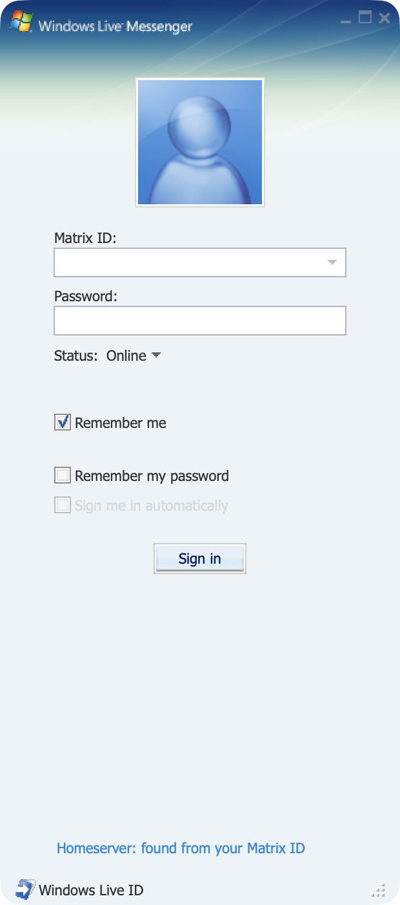
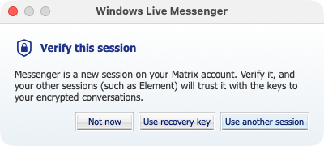

Get started
Like Messenger for Escargot, the app ships none of Microsoft's artwork. You import it once from the original installer, and both apps share it.
-
Install the app
Open the DMG and drag Messenger for Matrix to Applications, or install the
.debfor your Ubuntu release. The first time you open it on a Mac, allow it under System Settings › Privacy & Security. -
Import the look
Download the Windows Live Messenger 8.1 installer (
escargot-wlm-8.1.0178-en.msi) from Escargot and run the importer on it. If you use the Escargot app too, it's already done. -
Sign in and verify
Sign in with your Matrix ID, such as
@you:matrix.org. If your homeserver signs in through the browser, Messenger opens it for you. Then verify the session with Element's emoji or your recovery key, so your other sessions share their keys with it.
On macOS, after brew install sevenzip ffmpeg
"/Applications/Messenger for Matrix.app/Contents/Resources/import/Messenger/scripts/import-wlm-assets.sh" \
~/Downloads/escargot-wlm-8.1.0178-en.msiOn Ubuntu
sudo apt install ./wlm-messenger-matrix_*.deb
wlm-messenger-matrix-import ~/Downloads/escargot-wlm-8.1.0178-en.msi

Under the hood it runs on matrix-rust-sdk, the engine Element X uses, so encryption, cross-signing and key backup work the way they do there.
What works
One-to-one and group chats with anyone on Matrix, encrypted, in Messenger's windows.
Messenger, mapped onto Matrix
Matrix has no contact list or nudges, so Messenger's ideas are built from what it has. Other Matrix apps see ordinary messages; two copies of Messenger also share fonts and nudges.
- Contact list
- The people you have direct chats with (
m.direct). - "Has added you"
- An invite to a direct chat. Declining leaves it and blocks the sender, as Messenger did.
- Group conversations
- Every other room with a name or several people in it. Inviting a third person into a one-to-one chat starts a new room, so they can't read what the two of you said. "Add a contact" with a room's address joins it, and a room you muted in another app stays quiet until you open it.
- Status
- Matrix presence: Online, Away for the away-type statuses, Offline for Appear Offline. The personal message is the presence status message.
- Fonts and colours
- Sent as formatted text, so they show in Element, plus Messenger's own font description for other copies of Messenger.
- Nudges
- An emote, "* Alice just sent you a nudge.", that Messenger recognises and shakes the window for.
Build it yourself
The same Swift package as the Escargot app: both apps share their windows and differ only in the service they sign in to. A Docker Synapse lets you test against your own machine.
git clone https://github.com/NickBouwhuis/rea-msn.git
cd rea-msn/Messenger
swift run MatrixMessenger # macOS
swift run MatrixMessengerGTK # Linux
docker compose -f ../devserver/matrix/docker-compose.yml up -d # a local Synapse on :8008